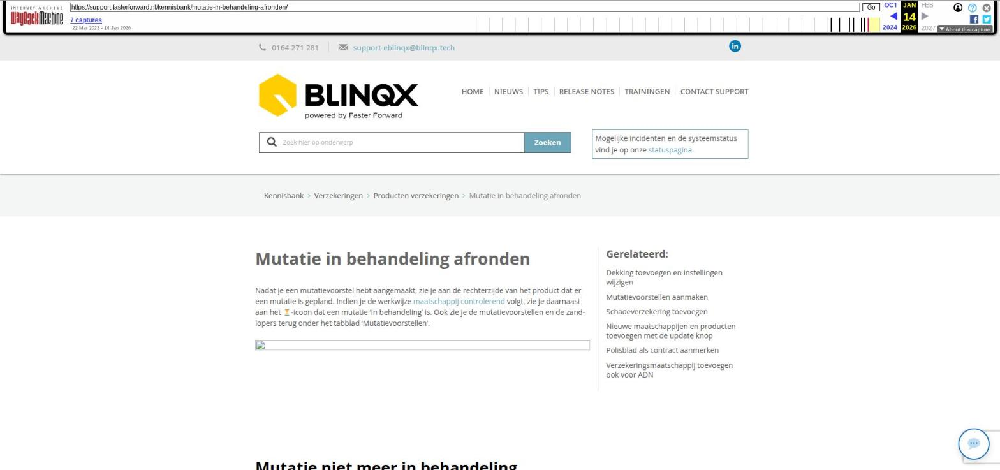

Mutatie in behandeling afronden

Tekstinhoud
Title: Mutatie in behandeling afronden | Support
URL: https://web.archive.org/web/20260114013652/https://support.fasterforward.nl/kennisbank/mutatie-in-behandeling-afronden/
Source element: <article>
---
Mutatie in behandeling afronden
Nadat je een mutatievoorstel hebt aangemaakt, zie je aan de rechterzijde van het product dat er een mutatie is gepland. Indien je de werkwijze maatschappij controlerend volgt, zie je daarnaast aan het zandloper-icoon dat een mutatie 'In behandeling' is. Ook zie je de mutatievoorstellen en de zandlopers terug onder het tabblad 'Mutatievoorstellen'.
Mutatie niet meer in behandeling
Vanuit de ADN module verwerk je de mutatiebatches. Zodra je een mutatie van de verzekeraar hebt verwerkt, wordt deze ook automatisch verwerkt in het juiste klantdossier. Het kan zijn dat er een mutatieconflict is. Deze dien je eerst op te lossen, voordat je de batch verder kunt verwerken.
Maatschappij volgend
Indien de mutatie is verwerkt, verdwijnt de 'Mutatie per datum' uit de productkaart. In het tabblad 'Mutatievoorstellen' wordt de status van 'Openstaand' veranderd naar 'Verwerkt'.
Maatschappij controlerend
Ook hier verdwijnt de 'Mutatie per datum' uit de productkaart. Daarnaast worden de zandlopers vinkjes. Het is ook mogelijk om handmatig aan te geven dat je een bevestiging van de mutatie hebt ontvangen van de verzekeraar. Dit doe je rechtstreeks in de polis, door op de zandloper te klikken. Dit is ook mogelijk via de workflow van de betreffende verzekering.
Betekenis van de kolommen:
Rappel: of er een herinneringstaak is/wordt aangemaakt
Ontvangen via ADN: geeft de status aan of de boeking is verwerkt in de rekening courant van de maatschappij (via ADN)
Gecontroleerd door kantoor: geeft de status aan of het polisblad is binnengekomen (via Aplaza of e-mail)
Zodra je dit hebt uitgevoerd, verdwijnt 'Mutatie in behandeling' bij de polis/pakket.
Overzicht van alle mutaties in behandeling
In het overzicht 'Mutaties in behandeling' zie je alle aankomende mutaties waar je eventueel acties op moet ondernemen. Dit overzicht zie je via Verzekeringen – Overzichten. Deze is alleen zichtbaar als je maatschappij controlerend werkt. Hier zie je alle mutaties in jouw eBlinqxsomgeving die in behandeling zijn. Daarnaast kan je hier eenvoudig sorteren en filteren.
Rode datums (09-06-2022) zijn mutaties waarbij de mutatiedatum in het verleden ligt.
Laatste update: 15 oktober 2025
Tagged: mutatie
Was deze informatie nuttig?
Ja Nee